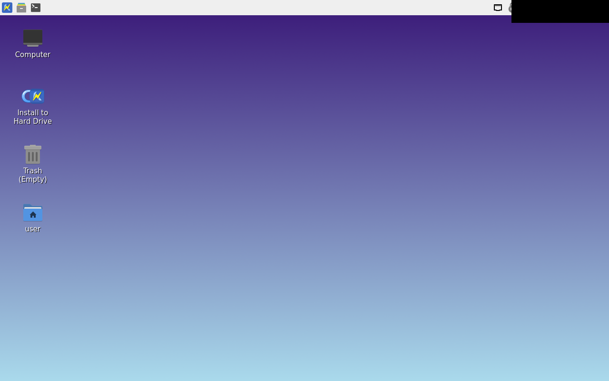

calamares-install fail
exit 5
dm-calamares-install FAILED (rc=5).
install-host launch log:
/usr/bin/install-host: START
/usr/bin/install-host: ERROR: **Unable To Elevate To Root**
The 'pkexec' or 'sudo' command is not executable by the current account. Installation cannot proceed. You may need to log in as account 'sysmaint' to resolve this.
/usr/bin/install-host: END
INFO: Feel free to close this window.
fail failure -- no approved golden yet

kicksecure-lxqt-bios/calamares-install/failure unknown / compare error
expected approved golden not produced by this run
kicksecure-lxqt-bios/calamares-install/partitions unknown / compare error
expected approved golden not produced by this run
kicksecure-lxqt-bios/calamares-install/summary unknown / compare error
expected approved golden not produced by this run
kicksecure-lxqt-bios/calamares-install/welcome unknown / compare error
expected approved golden not produced by this run